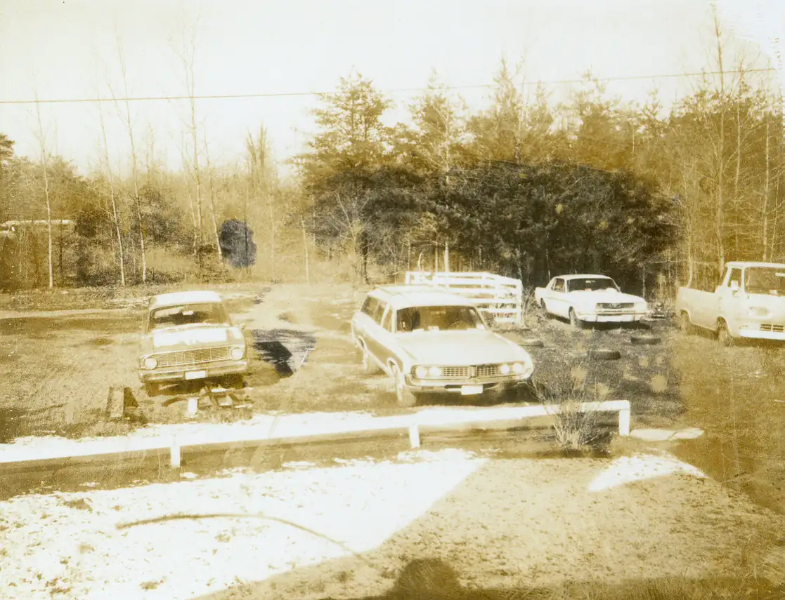

Home / Krehbiels / 016 Krehbiel Robert and Gerry / kre016-00005
kre016-00005
← Return to 016 Krehbiel Robert and Gerry
← kre016-00004 kre016-00006 →
1974 Parking lot of Centreville house. Parking lot of 6035 O'Day Drive, ca. 1974 according to a caption by Mike. I looks like it was shortly after the house was built since the shed is missing, and so are the hedges.

Actual size: 3.72" × 2.85" · Scanned at: 300 dpi · 0.96 MP (1117×855) · Image date: 7 Aug 2005 · Comment date: 7 Aug 2005
Copyright © 2005–2026 Thomas Krehbiel. Images are freely distributable for personal use. For more information about these images contact Thomas Krehbiel (tkrehbiel@gmail.com).
Photos were scanned at either 300dpi or 600dpi, depending on the quality of the photograph. Slides were scanned at 1800dpi. Documents were scanned at 100dpi or 150dpi. Photoshop enhancements: most images have had their contrast improved. Some color photos were corrected to restore color balance. Some blurry images were mildly sharpened. Occasionally dust, scratches, and blemishes were removed digitally.
{kind=link}